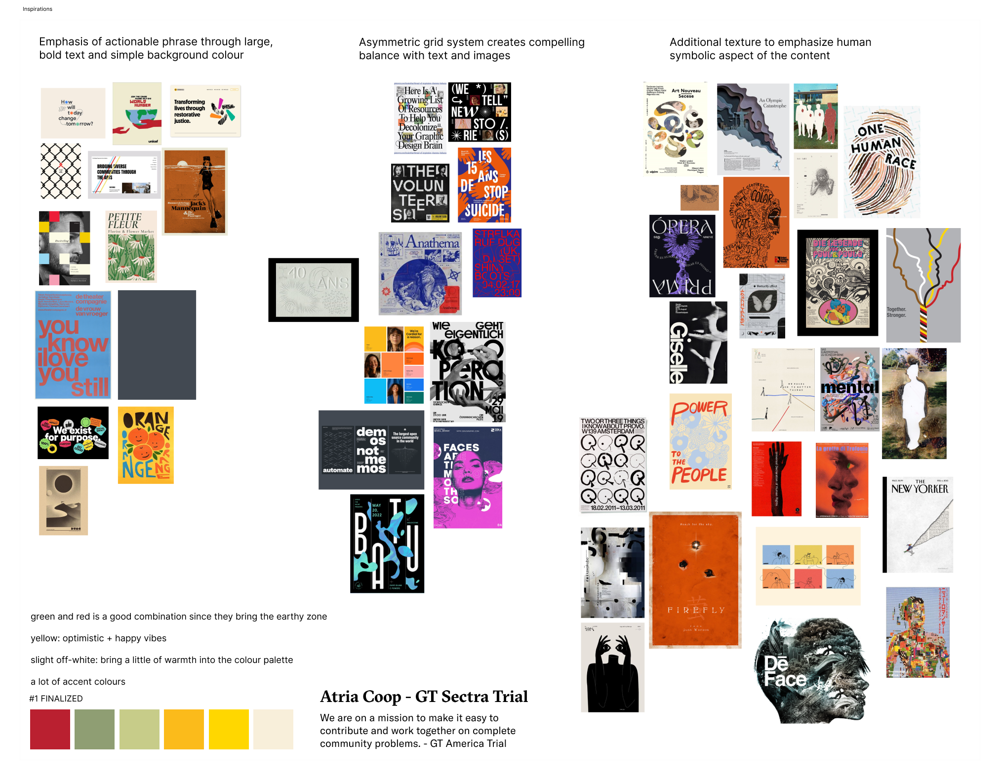
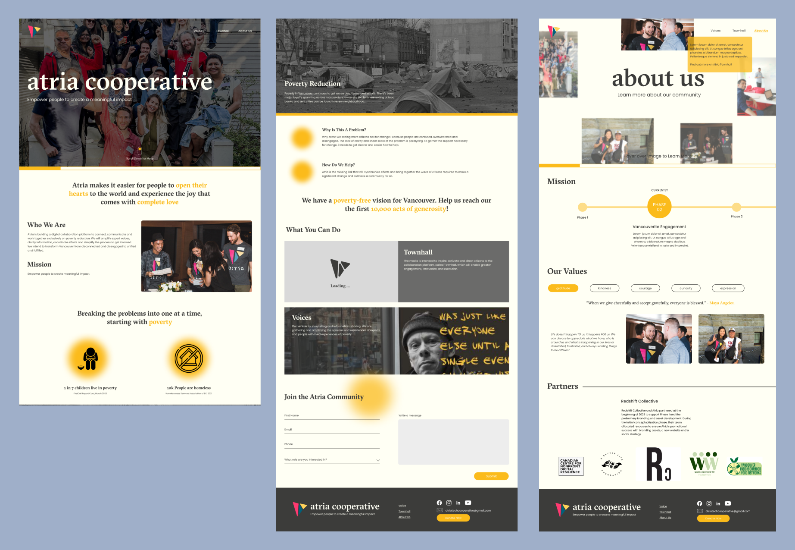
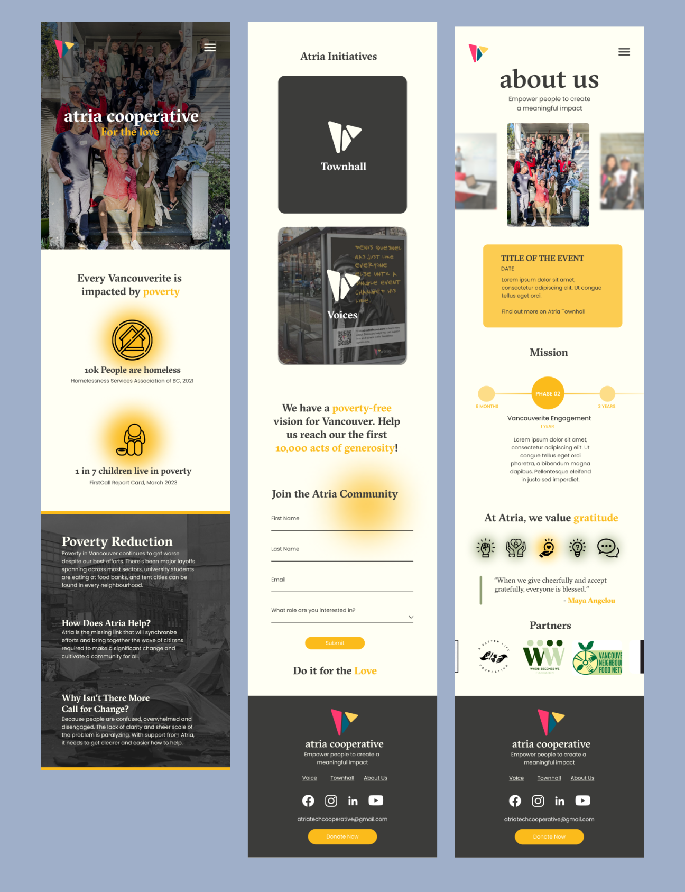

MAY. - OCT. 2023
Atria Cooperative Website Design
Volunteer Work

Overview
Myself in a team of four were brought on to the Atria Cooperative (a non-profit organization that works on helping people in poverty in Vancouver) creative team to redesign Atria’s current website and reimagine the organization's branding. We would participate weekly meetings conducted by our team lead (Firm), where we would conduct an iterative process of analyzing Atria’s website and our original wireframes, conducting brainstorming/inspiration generation exercises and designing wireframes.
My Roles
Visual Design, UX/UI Design, Prototyping, User-Testing, Research
Tools
Figma
Team
Areeba Ali, Tiffancy Chan, Firm Kongthong (Team Lead), Lauryn Yau
Process Analysis
Brand Identity
We spent the beginning of our process creating a new brand identity for Atria to implement into our website. I spent time looking over inspirational resources, such as Pinterest and Dribbble, to find colours/colour palettes that I felt matched with Atria's current philosophy of being warm, calming and welcoming, resulting in yellows and cream/neutral tones. When picking fonts I went with a mix of serif and san serif fonts, to provide a more modern look, while still remaining professional. It was also important to choose fonts that were easy to read, resulting in san-serif fonts being chosen.
Final Styleguide
Wireframing and Secondary Research
Our team used an iterative process while designing the desktop and mobile wireframes in Figma. Initially, I did research on similar organizations and their sites and took notes on what was successful and what was not on their sites, to know what to apply on Atria's site.
To design the wireframes, Firm suggested we did design sprints, in which each member would design their own wireframe of a specific page or element and as a group we could look over each wireframe and discuss what elements we liked the most from each wireframe before combining the ideas we liked the most together on the finalized wireframe. We would design within the same Figma file so we could see each other's work and stay consistent with the branding of the site.
When designing my wireframes I preferred to include pops of colour on an otherwise neutral background to provide emphasis on specific information, like statistics and important messages from Atria. This provided a monochrome/modern and clean look for the final site.
Atria desktop wireframes (homepage, links to resources and information + contact form, company about page)
Atria mobile wireframes (homepage, links to resources and information + contact form, company about page)
Project Conflicts and Solutions
Being the first time I had to design for a client that had little knowledge on design language and the best practices to design a product that is user-friendly and visually appealing, it was difficult to communicate ideas and ask for resources (such as past designs, images, colour palettes) to assist in the design process.
This caused our team to make everything from scratch, which in the end was successful but it was increasingly difficult to design a website without having any knowledge of what the organization wanted in the end product. To combat this issue extensive research was done on other websites and peer critique was essential to gain useful feedback, often guiding with questions such as "What do you think of this specific element?" "How does it make you feel?" "What are you drawn to most?".
Project Reflections
Unfortunately due to funding our final redesign was not able to move into development, however working with Atria was a very educational experience for me. I learned how to research through other websites effectively to gain insight and conduct a heuristic evaluation of a website to pick out areas that need further development. I was also able to exercise my wireframing and prototyping skills through design workshops with my team.
During this project I was able to learn new ideating exercises and practices to conduct with a team in order to prompt conversation and ideation, such as researching of competitors, inspiration exploration and joint design sprints.